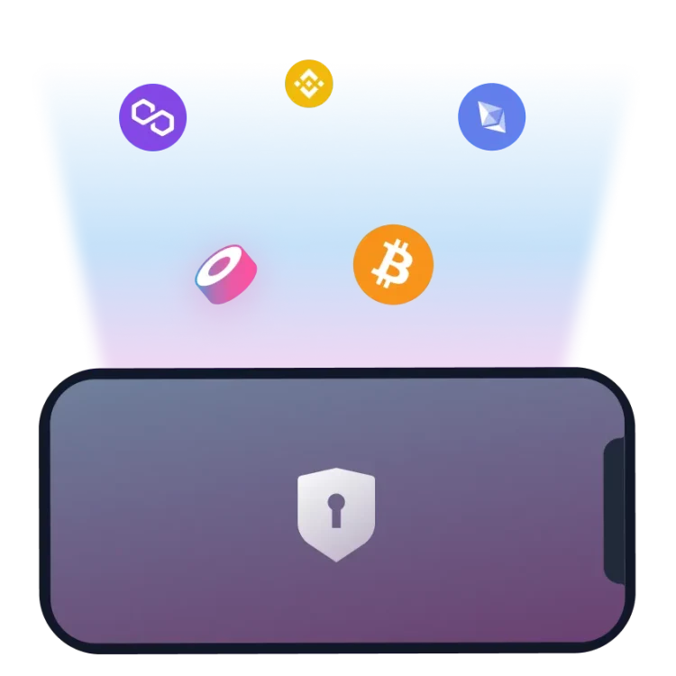
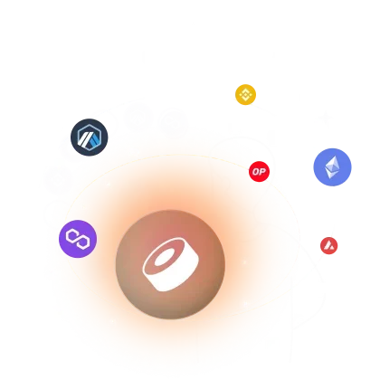
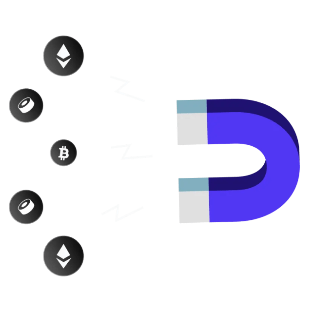
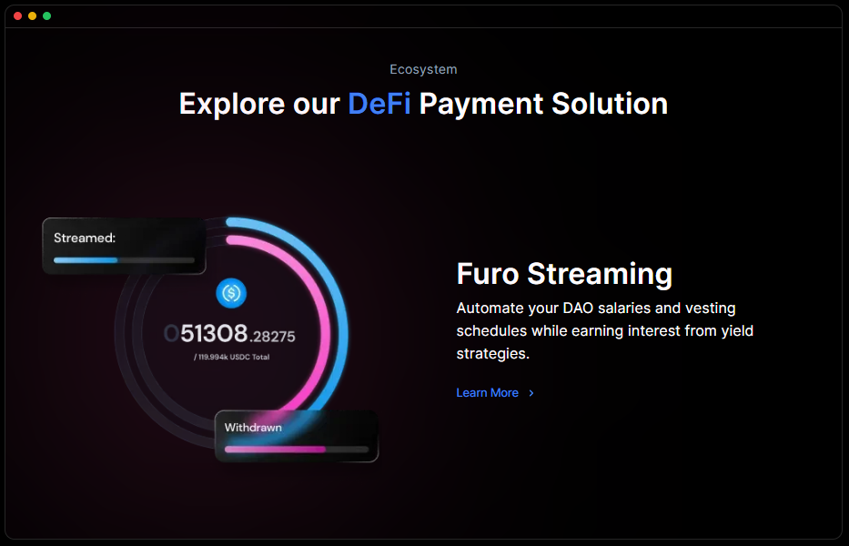
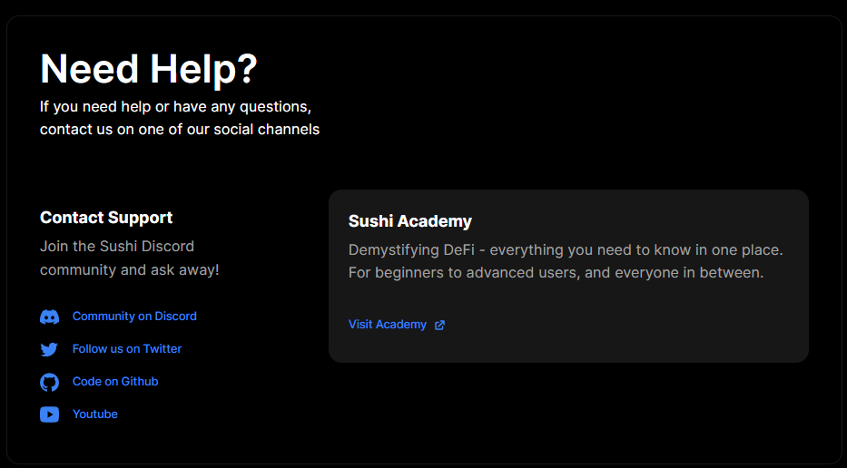

PRICE
TOTAL LIQUIDITY
TOTAL VOLUME
TOTAL PAIRS
Since the inception of Sushi. We appreciate all
the friends we’ve made along the
way to the
Future of Finance.

Own your own crypto, just like cash in your wallet.
Fully decentralized & self
custody of your funds
means your money in your wallet, as it should be.
Own your own crypto, just like cash in your wallet.
Fully decentralized & self
custody of your funds
means your money in your wallet, as it should be.


With multiple ways to passively earn yield on your
coins, you can choose your own
yield stack and make
your money work for you, all in the background, 24/7.

A secret ingredient is something that makes the dish delicious and in the context of trading and cryptocurrency, Sushi Swap can be seen as a "secret ingredient" that adds a unique flavor to the world of decentralized exchanges. It comes with an innovative liquidity provision mechanism and a user-friendly interface that makes trading easy compared to other platforms.
Whether you are a newbie in crypto trading or an expert trader, this platform gives you outstanding support in terms of wallet, withdrawal money, and online help support. Here you do not need to do any account registration and you can start trading on this platform if you have set up a wallet already.
Sushi Swap is best for those who are looking to generate side-by-side their degree, job, or any other profession. There are multiple ways to passively earn a yield on your coin which is a great income source for many of us. So, let us get started to know in detail how to make money work for you even when you are not working.
This decentralized exchange was created as a fork of Uniswap, another decentralized exchange platform. What sets Sushi Swap apart is its innovative liquidity provision mechanism that rewards users for providing liquidity to the platform. Whether you want to swap, earn, buy, or sell, stack yields, borrow & leverage, this platform lets you perform all these trading tasks easily and securely.
SUSHI, the platform's native token, can be used for governance and trading on the exchange. Sushi Swap has gained immense popularity in the DeFi sector and has established itself as a leading decentralized exchange with high trading volume and liquidity.
The process to get started on the Sushi Swap exchange is not so difficult. But you need to make sure that you have the keys and tokens in your wallet. You can use different Ethereum wallets on this platform such as Arbitrum, Barnbridge, LayerZero, Magna, MetaMask, Optimism, Polygon, zkSync, and bobQ. If you do not have a crypto wallet, you can use Sushi Wallet which is safe to use and reliable. The first procedure of getting started here is connecting your wallet to the exchange.
Connecting a wallet on the SushiSwap exchange requires a PC with an internet connection and updated and private key details. Now, if you have these things, follow the steps that are given below to connect your wallet to the Sushi Swap exchange securely.
SushiSwap lets you earn in many ways like providing liquidity, staking sushi, participating in yield farming, and participating in liquidity mining. Let’s start discussing all these ways to understand how Sushi Swap lets you earn in detail.
SushiSwap allows its users to provide liquidity and a portion of the trading fees generated by the platform. Here you can deposit equal amounts of two different cryptocurrencies into a liquidity pool to provide liquidity. Here are the steps that you need to follow to add liquidity on Sushi Swap without any mistakes:
After paying the gas fee, your transaction will be confirmed and you will receive the LP tokens in your wallet. These tokens are a share of the liquidity pool and you can also hold these tokens or trade further on the SushiSwap.com exchange.
Staking SUSHI allows you to earn rewards and it is a simple process that can be easily performed by you on SushiSwap. Now, approach the step-by-step guide on how to stake SUSHI on the Sushi Swap exchange that is elaborated below:
Pro Tip: Staking on SushiSwap carries risks. So, it is important to do your own research and fully understand the risks of staking SUSHI on the SuShiSwap.com exchange.
SushiSwap is a simple and secure crypto trading platform that is much beneficial for those who want to generate passive income. Staking and providing liquidity on this platform helps you become rich and achieve financial freedom. If you are 18 years or old, this platform allows you to buy and sell your crypto assets without asking for any personal details. Hopefully, this read has helped you to understand how to trade and earn on Sushi Swap exchange. To avoid any type of error during the trade, make sure to update your browser before visiting the SushiSwap.com webpage.
